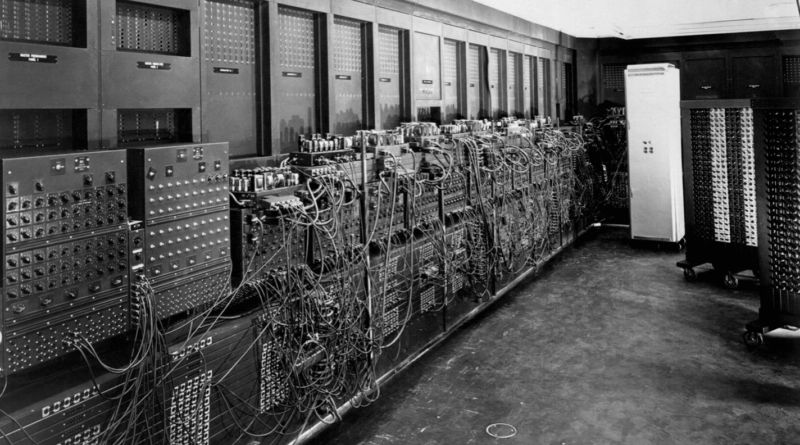

Le origini dell'informatica
L'informatica nasce come disciplina dedicata al trattamento automatico delle informazioni. I primi computer, come l'ENIAC negli anni '40, erano enormi, lenti e complessi. Venivano usati principalmente da enti governativi e militari.
L'avvento dei personal computer
Negli anni '80 e '90, l'informatica ha vissuto un'evoluzione radicale con la diffusione dei personal computer. Le famiglie hanno iniziato a utilizzare i computer a casa, e i sistemi operativi grafici come Windows hanno reso l'informatica accessibile a tutti.
L'era di Internet e del cloud
L'inizio del 2000 ha visto l'esplosione di Internet e del cloud computing, trasformando il modo in cui accediamo, condividiamo e salviamo i dati. Oggi, grazie al cloud, possiamo lavorare da qualsiasi dispositivo connesso.